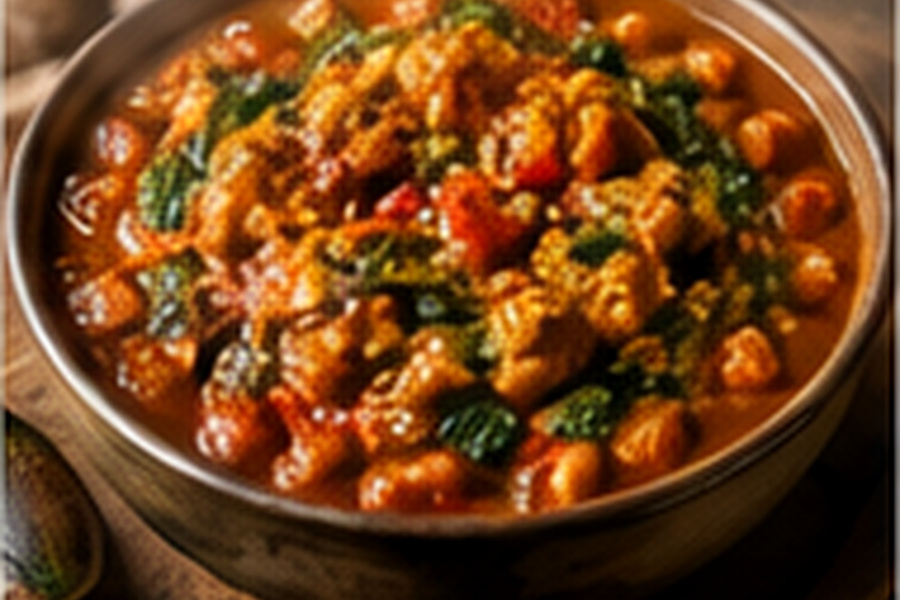

West African Groundnut Stew
A vegetable-forward tomato stew enriched with peanuts, sweet potato, chickpeas and greens.

About this dish
Peanut and groundnut stews appear across West Africa under many names and in many forms, including maafe, domodah and tigadegena. Some are meat-centered, some include root vegetables, and seasoning varies substantially by country and household. The common thread is a savory sauce enriched with ground peanuts.
This Fringe Table recipe is deliberately labeled a vegetable-forward home adaptation. It uses natural peanut butter, sweet potato and chickpeas rather than presenting itself as one country's definitive maafe.
A regional family of groundnut sauces
African Food Network documents the many names attached to peanut stews across West Africa and connects maafe particularly with Mandinka and Bambara food traditions in Mali, with related dishes spreading through Senegal and neighboring countries. The modern peanut itself arrived in Africa from the Americas, while African cooks already had longstanding traditions of cooking with indigenous groundnuts.
Later expansion of peanut cultivation, including during the colonial period, increased the crop's economic and culinary importance in several West African regions. The result is not one standardized stew but a broad family of dishes shaped by local meats, vegetables, chiles and starches.
Because “West African groundnut stew” covers many distinct traditions, this page avoids claiming a single national authenticity. Seek out country- and community-specific maafe, domodah and tigadegena recipes for deeper study.
Preparation notes
A peanut butter made mostly from peanuts gives better control over sweetness and salt than heavily sweetened sandwich spreads.
Whisk it with hot broth before adding it to the pot. This prevents dense lumps and makes a smoother sauce.
Peanut-thickened sauces can scorch once concentrated. Stir more often after the peanut butter goes in.
Ingredients & detailed method
Ingredients
- 2 tbsp neutral oil
- 1 medium onion, diced
- 3 garlic cloves, minced
- 1 tbsp grated fresh ginger
- 1 tsp ground cumin
- 2 tbsp tomato paste
- 1 can (14 oz) diced tomatoes
- 1 large sweet potato, peeled and cut into 3/4-inch cubes
- 4 cups vegetable stock, plus more as needed
- 3/4 cup natural peanut butter
- 1 can chickpeas, drained and rinsed
- 4 cups chopped collards, kale or spinach
- Fresh lime juice, to taste
- Kosher salt
- Chopped roasted peanuts, for serving
Method
- 1.Start the onion. Heat oil in a heavy pot over medium heat. Cook onion 6–8 minutes until soft and lightly golden.
- 2.Add aromatics. Stir in garlic, ginger and cumin for 30–45 seconds. Checkpoint: they should smell fragrant without browning.
- 3.Cook the tomato paste. Add tomato paste and stir 1–2 minutes until it darkens slightly.
- 4.Build the tomato base. Add diced tomatoes and simmer 4 minutes, scraping the bottom of the pot.
- 5.Cook the sweet potato. Add sweet potato and 3 cups stock. Bring to a simmer and cook 12–15 minutes.
- 6.Check the root vegetable. Checkpoint: a knife should enter a sweet-potato cube with some resistance; it should be nearly tender but not falling apart.
- 7.Temper the peanut butter. Ladle about 1 cup hot broth into a bowl and whisk in peanut butter until completely smooth.
- 8.Enrich the stew. Stir the peanut mixture back into the pot. Reduce heat to medium-low and stir frequently as it thickens.
- 9.Add chickpeas and greens. Simmer 8–10 minutes. Use tougher greens earlier and spinach only for the final few minutes.
- 10.Check consistency. Checkpoint: the stew should coat a spoon but still pour easily. Add stock if it becomes pasty.
- 11.Check the vegetables. Sweet potato should be fully tender without dissolving; greens should be cooked to the texture appropriate for the variety.
- 12.Balance and serve. Season with salt and fresh lime juice. Ladle into bowls and top with chopped roasted peanuts.